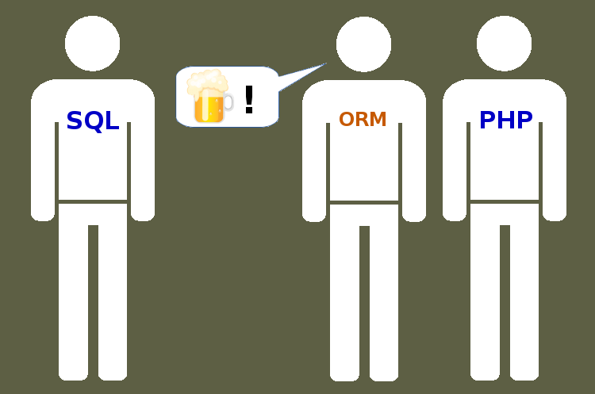

Unleash the power of Postgresql
In your PHP developments
Grégoire HUBERT - PHPNE2014
About me
- Grégoire HUBERT
- PHP & Postgresql since 1999
- Author of Pomm
- Founder of PragmaFabrik

- @chanmix51 @PommProject @PragmaFabrik
The (yet) undetected power of Postgresql

PHP & SQL

- Different paradigm
- Poor communication interface
ORM & SQL

- Enforce OO pattern in relational world
- You do not know what your database is doing
- Cannot easy tune for performances
How your DBA sees your data

How PHP developers see their data

What's wrong ?
- Relational engine as entity persistence layer
- Enforcing OO paradigm in a relational engine
- Statically maps each entity on a table
- Ends up in a "
key => entity" storage - Poor added value
What if we fit relational logic in OO ?
- Relational databases do deal with sets
- Sets are extendible tuples
- Entities are projections of sets
- Tables are just named persistent sets
What if we fit relational logic in OO ?

- Sets are projected into entities
- Values are converted from / to the database
- PHP equivalents types
Converters and types
Postgres is awesome
Some of Postgresql's types
- ➥ boolean, bitchar, bitvar
- ➥ strings, uuid, xml, json, inet
- ➥ numbers, timestamps with time zone, intervals
- ➥ integer and timestamps ranges
- ➥ point, circle, segment, box, polygon
- ➥ HStore, LTree, ts_vector, bytea
- ➥ custom types, objects
- ➥ arrays of all the types above
- ➥ Enter your type here
Pomm's converters
- ➥ boolean,
bitchar, bitvar - ➥ strings, uuid, xml, json, inet
- ➥ numbers, timestamps with time zone, intervals
- ➥ integer and timestamps, ranges
- ➥ point, circle, segment,
box, polygon - ➥ HStore, LTree, ts_vector, bytea
- ➥ custom types, objects
- ➥ arrays of all the types above
- ➥ Enter your type here
But types are nothing without
proper operators
SELECT inet '172.17.0.2' << inet '172.16.0.0/12';
SELECT numrange(1.1,2.2) -|- numrange(2.2,3.3);
SELECT lseg '((1,-1),(-1,1))' # lseg '((1,1),(-1,-1))';
SELECT 'Pika chu' ~* '^p.{2}';SELECT 2 = ANY(ARRAY[1,2,4])
Use them in your where clauses
$users = $this->findWhere(
"$* = ANY(telephones) OR birthdate <@ tsrange($*, $*, '[]')",
[$tel, $min_date, $max_date]
);
Build your where clause
protected function queryOnPhoneAndBirthdate($tel, $min_age, $max_age)
{
return Where::create("$* = ANY(telephones)", [$tel])
->orWhere("birthdate <@ tsrange($*, $*, '[]')", [$min_age, $max_age]);
}
public funtion findSomething($...)
{
$where = $this->queryOnPhoneAndBirthdate(...)
->andWhere("activity ~* $*", [$activity]);
return $this->findWhere($where);
}
- Binds parameters immediately
- Manages the order for you
- Respects logical precedence
HStore: key => value store
- Optional fields
- I18N:
SELECT label->en AS label FROM product
- Converted to PHP associative array
XML
- Native support of xpath queries
SELECT xpath('/section/p', xml '<section><p>plop</p></section>')Can be useful to parse API dataProposes XSLT processing functions
JSON
- Native support of JSON
SELECT json_field->en AS label FROM product
- Converted to PHP associative array through
json_encode() SELECT row_to_json(pika) FROM pika
- Converts SQL objects to JSON
SQL object ?!?
- Custom composite types
CREATE TYPE plop AS (pika varchar, chu int)
SELECT my_plop FROM my_table
SELECT (my_plop).pika, (my_plop).chu FROM my_table
- Converted to PHP objects
print_r($my_entity->my_plop); Object "plop": { "pika": "asdf", "chu": "1" }
Projection system
Projection : the "SELECT" statement
$student = $this->findByPK(['student_id' => 2]);
/*
Student:
first_name: sam
last_name: socket
password: 32ªØ~ぜ
birthdate: DateTime Object
Modifying the default projection
public function getSelectFields($alias = null)
{
$fields = parent::getSelectFields($alias);
unset($fields['password']);
$fields['age'] = sprintf(
"age(%s)",
$this->aliasField('birthdate', $alias)
);
return $fields;
}
Projection : the "SELECT" statement
$student = $this->findByPK(['student_id' => 2]);
/*
SELECT first_name, last_name, birthdate, age(birthdate) ...
WHERE student_id = $*
Projection : the "RETURNING" statement
public function deleteController($student_id)
{
$student = $this->dic['db.connection']
->getMapFor('\School\ClassRoom\Student')
->deleteByPK(['student_id' => $student_id])
;
/* DELETE FROM student WHERE student_id = $*
RETURNING first_name, last_name, ... */
if (!$student) {
return new Response("No such student", 404);
}
'INSERT', 'UPDATE' and 'DELETE' can also be projected
What if we fit relational logic in OO ?
- In Postgresql
- Strongly typed attributes
- Extensible sets
- In PHP
- Lousily typed attributes
- Schemaless typed entity classes
What if we fit relational logic in OO ?

- Speaks native language for both worlds
- Let you manage what you want if needed
www.pomm-project.org